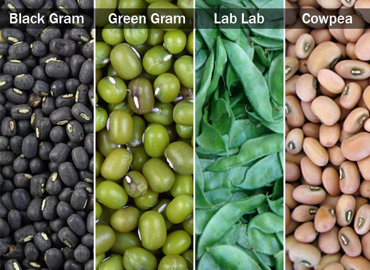

| Home |
| PULSES |
| 1. Bean Aphid |
| 2. Thrips |
| 3. Whitefly |
| 4. Green Leafhopper |
| 5. Pod Bug |
| 6. Lab-lab bugs / Stink bug |
| 7. leaf webber |
| 8. lab-lab leaf miner |
| 9. termites |
| questions |
| download notes |
PESTS OF PULSES - BLACK GRAM, GREEN GRAM, LABLAB AND COWPEA
One of the major constraints for low yield of pulse crop is the extensive damage caused by insect pests. About 250 insects have been recorded feeding on pulse crops. Of these, about one dozen insects including pod borers, stem borers, leaf miners, foliage caterpillars, cutworms, jassids, aphids and whiteflies are most important. Some polyphagous insects also feed on these crops and cause considerable damage.
